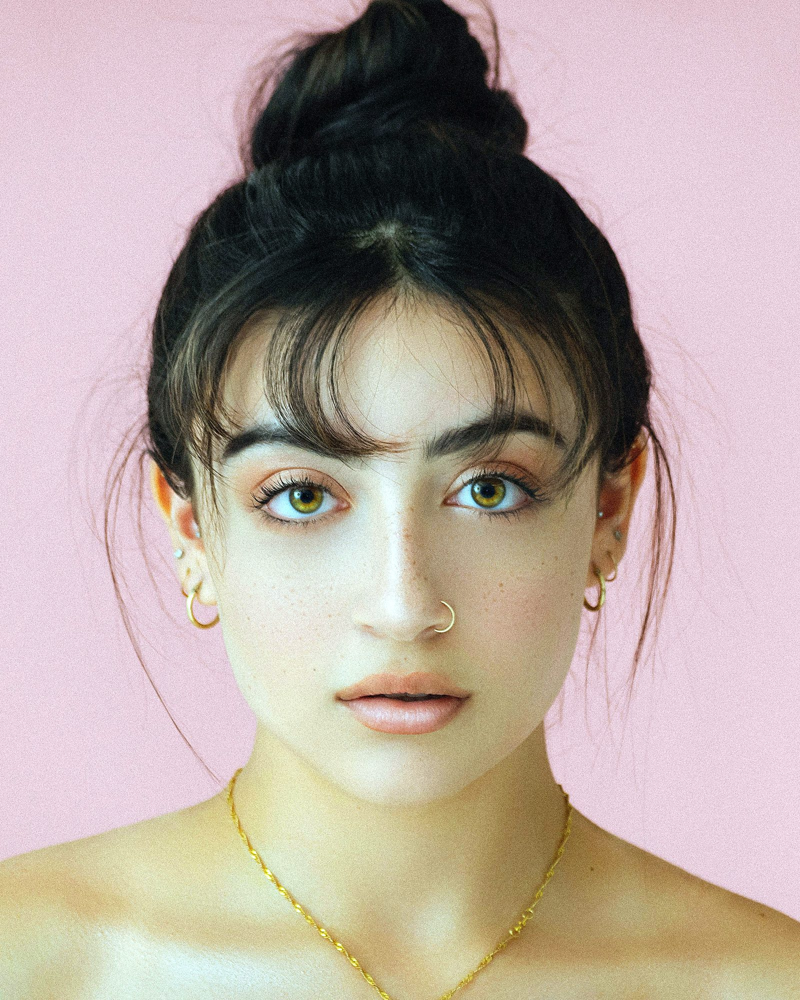

Ombre brows: how long they really last, and the aftercare that decides it
By a KuuStore brow technician · Published November 14, 2026 · Last reviewed November 14, 2026
You are on Ocean Drive in Miami Beach, two days after your ombre brow appointment, and your brows look dark — much darker than the soft, shaded brows in the photos that sold you on it. By day six they are flaking. By day ten they look so light you wonder if the colour left with the flakes. Nothing has gone wrong. That is the normal road, and knowing it in advance is the difference between enjoying the result and panicking through the best part of it.
The short answer: Ombre brows (a semi-permanent makeup technique where pigment — colour placed just under the skin — is shaded lighter at the front of the brow and deeper toward the tail) typically last 1 to 3 years before they fade enough to want a colour refresh. The surface of the skin heals in about 10 to 14 days, the true colour settles at 4 to 6 weeks, and a touch-up at 6 to 8 weeks fills in any soft spots. How long yours last is decided mostly by three things: your skin type, how much sun they get, and whether you followed the aftercare in the first two weeks.
Why do they look too dark, then too light, then right?
Think of a scraped knee, because brows heal the same way. Fresh pigment sits at the surface, so days 1 to 3 look bold and dark, the way a fresh scrape looks angry and red. Then the skin repairs itself over the pigment: flakes form and lift, and they take a little of that surface colour with them, so days 5 to 10 can look patchy and far too light. Underneath, the colour is still there — it is just being seen through new skin, the way a scar looks pale before it settles. By 4 to 6 weeks the skin has finished rebuilding and the real shade shows. Judging your brows before that point is judging a knee on day three.
And here is the same idea from the other side: healed brows soften by roughly a third compared with how dark they look on day one. So the bold brows in the mirror on day two are not the result. They are the starting point the fading works from, and your technician planned for exactly that fade.
What does the aftercare actually ask of you?
For the first 7 to 10 days: keep the brows dry as your technician directs — blot, do not soak — and apply only the aftercare ointment you were given, in the thin amount you were shown. No picking at flakes, ever; a flake pulled off early can pull the pigment under it out with it, and that is how bald spots in a brow happen. No makeup on the brows until the flaking is finished. No swimming, saunas, or hard workouts that leave your face sweating through the first week. In South Florida in November that last one needs planning, not willpower: the midday sun is still strong enough to fade fresh pigment, so a hat is not a fashion choice for the first two weeks, it is part of the treatment.
What makes one person's brows last 3 years and another's fade in 1?
Skin type first. Oily skin pushes pigment out faster, so brows on oily skin usually sit at the 1 to 2 year end. Normal and dry skin hold colour longer, toward the 2 to 3 year end. Sun second: ultraviolet light breaks pigment down the way it fades a tattoo or a car seat left outside in Coral Gables, so sunscreen on healed brows — or a hat — is real maintenance, not a suggestion. Habits third: strong face products with retinol or exfoliating acids, used right over the brows, speed the fade. Move those products around the brow, not through it.
What does the touch-up at 6 to 8 weeks do?
It is not a redo and it is not a sign anything failed. At 6 to 8 weeks your technician can finally see the settled colour — which spots took the pigment evenly, which faded soft — and evens it out. Most people need refresh visits every 12 to 18 months after that to keep the shape and depth where they like it. Your KuuStore technician will talk through the likely timeline for your skin honestly at your consult, before you commit, because results vary by skin type and aftercare — that is on our ombre brows page, and it is the truth here too.
Watch one person's full two months, start to finish
The video below follows a client through her own ombre powder brow appointment and the whole healing that followed, day by day, ending with a two-month update. Watch the day 4 to 7 section closely — that is the flaking stage that worries people, and you can see it pass.
What the video shows, in plain words: A client films her ombre powder brow experience from the day before her appointment to two months after it. You see her natural brows and the patchy spots she wanted fixed, then the appointment itself and the dark, fresh result. The middle of the video is a day-by-day diary: day one with aftercare and mild swelling, days four and five with the scabbing and flaking stage, one week out with the colour looking faded, and her notes on sweating, showering, and sleeping while the brows heal. She finishes at two months with the settled colour, her touch-up, and an honest verdict on pain, cost, and whether she would do it again. If you only watch one part, watch the diary days — that is the part nobody believes until they see it.
When should you call your technician instead of waiting?
Call if one brow flakes off in a sheet while the other does not, if the skin gets hot, swollen, or sore after the first few days instead of calmer, or if the colour is still patchy and uneven at the full 6 weeks. Uneven at day ten is normal. Uneven at week six is a touch-up conversation. KuuStore brow appointments happen in your home across Miami-Dade, Broward, and Palm Beach, and the mapping comes first: the shape is drawn and approved by you before any pigment touches skin.
